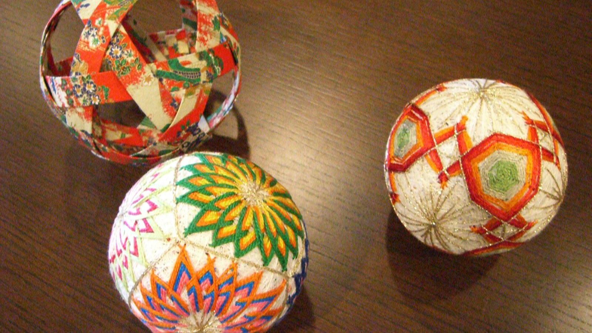
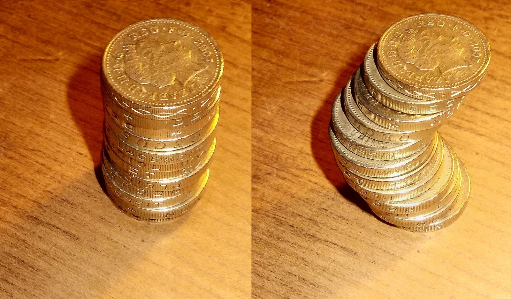
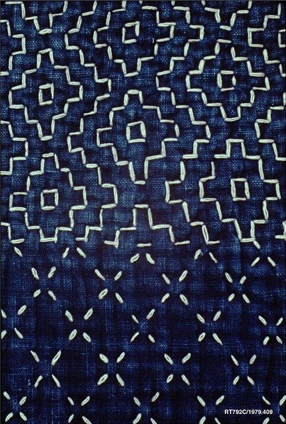
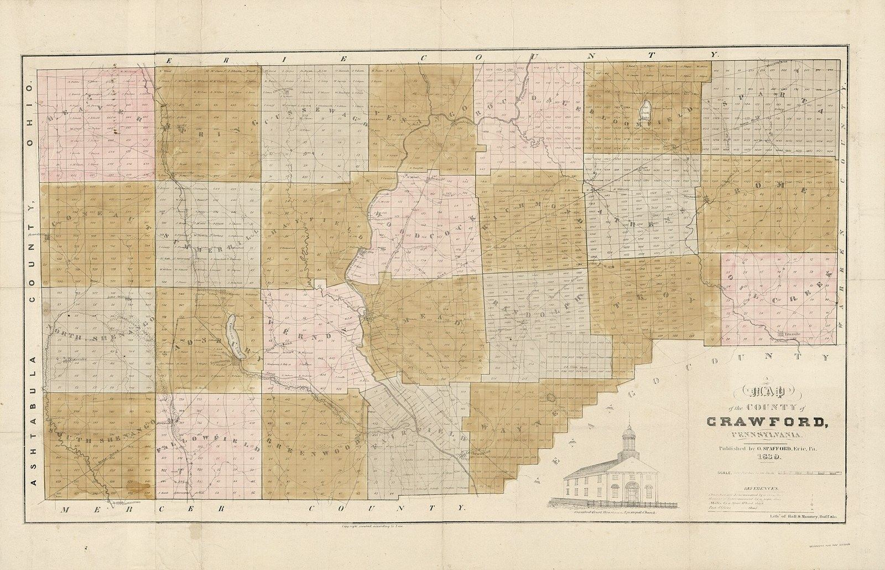
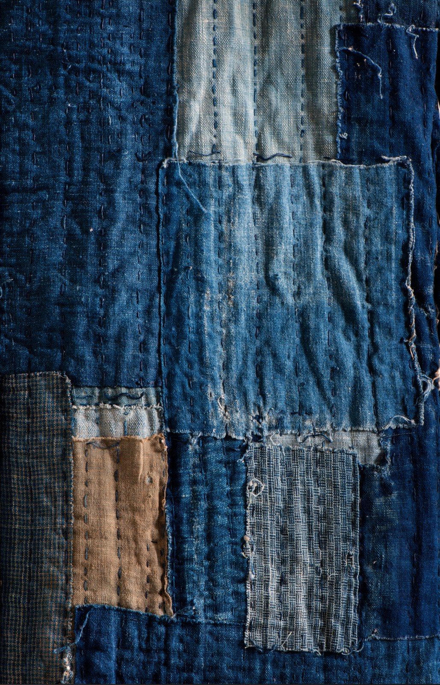
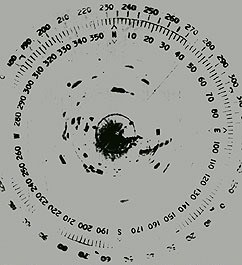
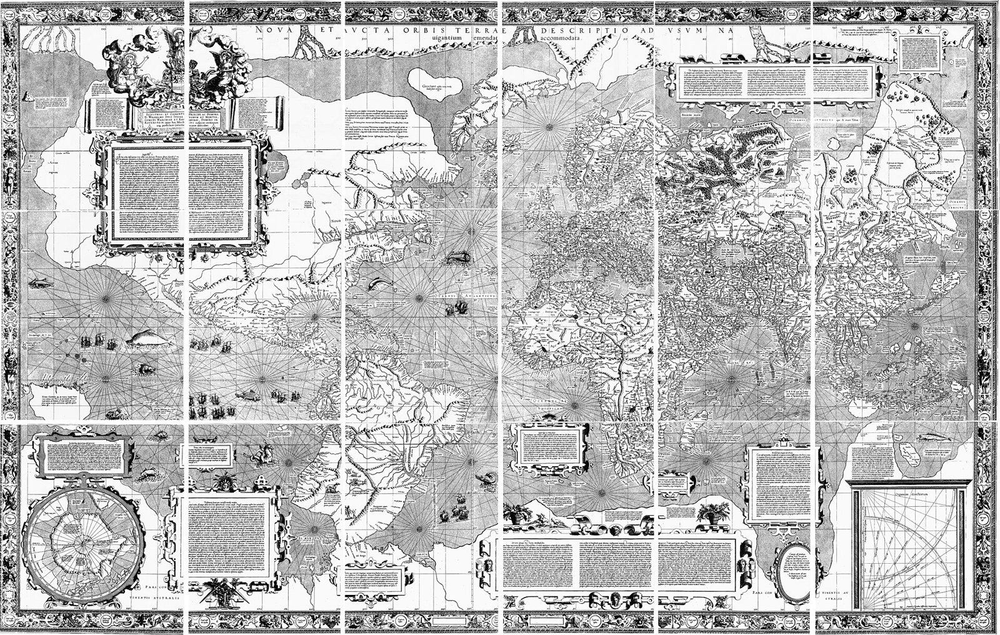
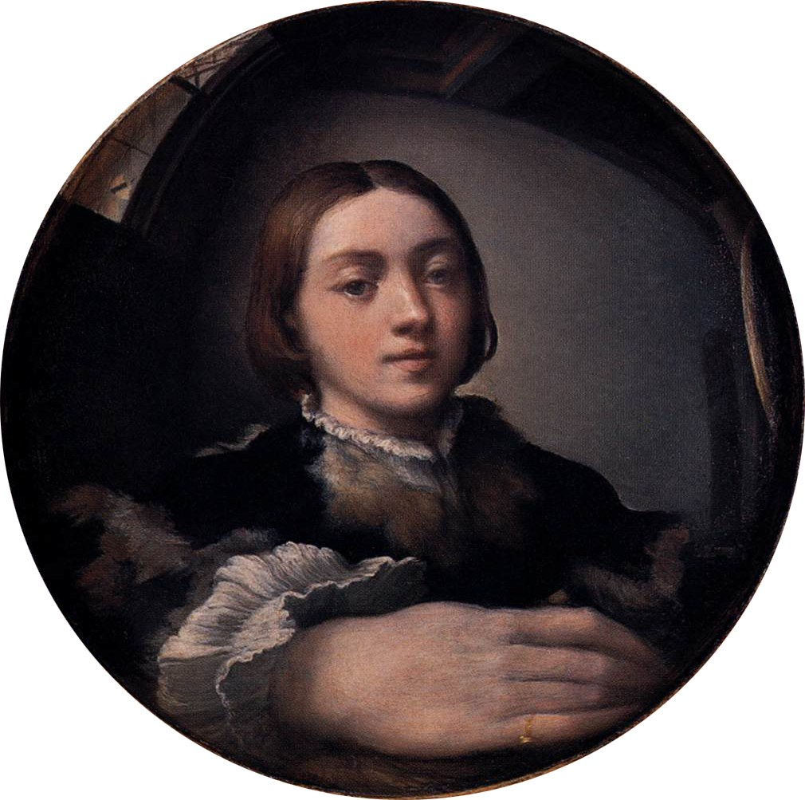
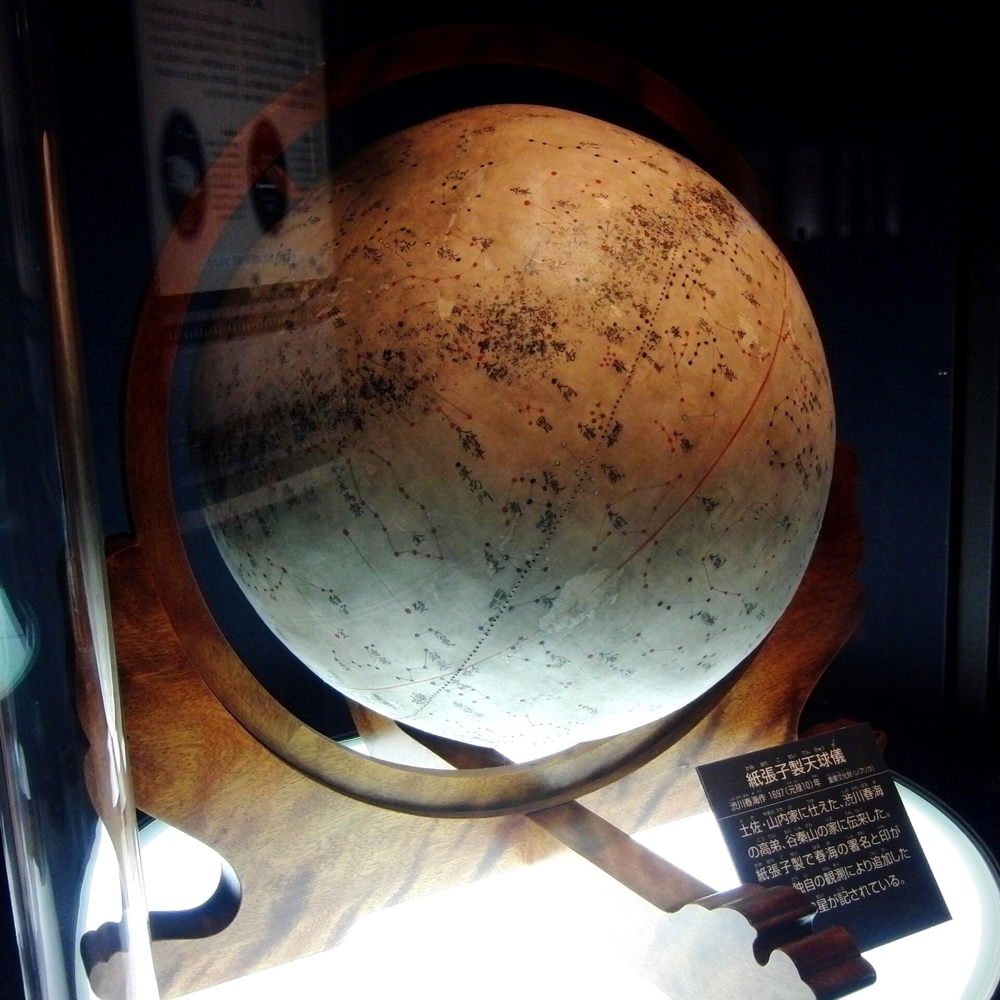
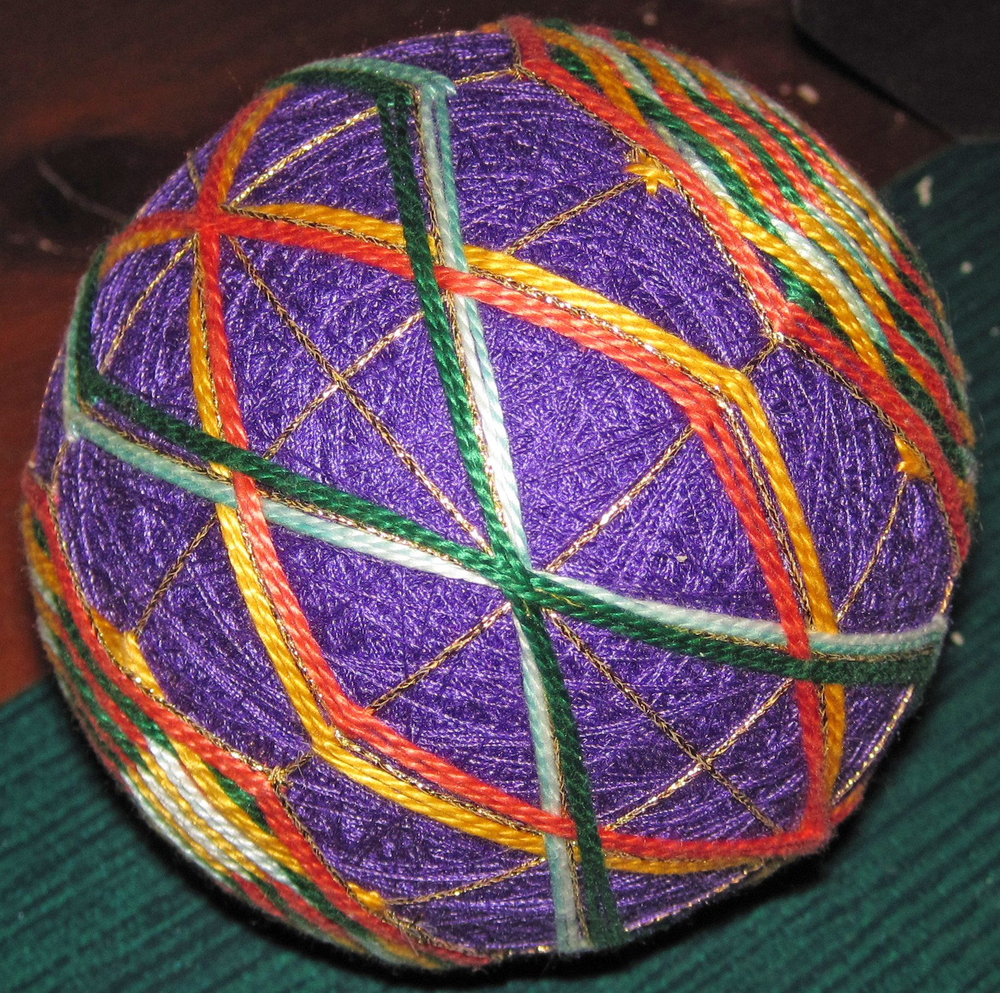

第13回
球は、糸の模様で小さな区画に分けられている。
Conveyor belt sushi（2009年、手鞠）／CC BY 2.0／Wikimedia Commons（横長に切り出した）
1変数の積分（第10回）を、平面・空間の領域の上へ広げる。二重積分・三重積分の定義、累次積分（第4回の二重和の順序交換の積分版）、極座標・円柱座標・球座標、そしてそれらの面積要素・体積要素（r dr dθ の r はどこから来るのか）を導くヤコビアンまでを、1行ずつ展開する。
第1回から続く約束どおり、新しい記号は緑色の枠（記号）で「①読み方 ②日本語での意味 ③省略していない書き方 ④どこで出会うか」を書く。この回は積分記号まわりの省略が多い回なので、重積分の省略の段階を S0（二重和の極限）から並べて、いつでも元に戻れるようにする。
高校の数学Ⅲの定積分と、第10回のリーマン和も、仮定せずに一度は書く。覚えている部分は飛ばしてよい。すべての導出は、数値で一度手を動かしてから文字の式に進む。
この回は座標を $(x,y)$、$(r,\theta)$ などと書く。平面極座標と円柱座標の角 $\theta$ は $x$ 軸から測る回転角（方位角）である。球座標だけは電磁気学・量子力学の流儀に合わせ、$\theta$ を「$z$ 軸からの角」、方位角を $\varphi$ と書く（球座標の $r$ は原点からの距離で、円柱座標の $r$ とは別。10.2 の流派の違いで、数学の本に多い逆の流儀との対照を示す）。行列式は第18回で詳しく扱うので、必要な 2×2 と 3×3 の計算規則だけを、その場で完全に書く。
最初に、この回で新しく説明する記号と、前の回で説明済みの記号を分けて並べる。右の列の「→」で説明のある場所へ飛べる。
| 記号 | 読み方 | ざっくりした意味 | 説明 |
|---|---|---|---|
| $\displaystyle\iint_D f\,dA$ | ダブル・インテグラル、ディー の上で エフ ディー・エー | 領域 $D$ 全体で $f\times$面積 を足し合わせたもの | →2.2 |
| $dA$、$dV$ | ディー・エー、ディー・ブイ | 小さな区画の面積、体積 | →2.3 |
| $\displaystyle\int_c^d\!\!\int_a^b f\,dx\,dy$（累次積分） | … | $x$ で積分してから $y$ で積分する | →3.3 |
| $D$（領域）、型 I・型 II | ディー、がた | 積分する平面の範囲 | →4.1 |
| $\displaystyle\iiint_E f\,dV$ | トリプル・インテグラル | 空間の領域 $E$ 全体で $f\times$体積 を足し合わせたもの | →5.1 |
| $(r,\theta)$（極座標） | アール・シータ | 原点からの距離と、$x$ 軸からの角 | →7.1 |
| $\dfrac{\partial(x,y)}{\partial(u,v)}$、$J$（ヤコビアン） | ヤコビアン | 座標を替えたときの面積の拡大率 | →8.3 |
| $(r,\theta,z)$（円柱座標） | アール・シータ・ゼット | 極座標に高さ $z$ を足したもの | →9.1 |
| $(r,\theta,\varphi)$（球座標） | アール・シータ・ファイ | 原点からの距離と、2つの角 | →10.1 |
| 記号 | 意味 | 初出 |
|---|---|---|
| $:=$ | 左の名前を右の式で決める | 第1回 2.2 |
| $\approx$ | ほぼ等しい | 第1回 2.4 |
| 省略の段階（S0, S1, …） | 省略の度合いを段階で呼ぶ | 第1回 6.1 |
| $\in$、$\subset$、$\mathbb R$ | 属する、部分集合、実数全体 | 第2回、第2回、第2回 |
| $\{(x,y)\mid\cdots\}$（集合の書き方）、$[a,b]$（閉区間） | 条件を満たすものの集まり | 第2回、第2回 |
| $f(x,y)$（多変数関数）、$g\circ f$ | 入力が2つ以上の関数、合成 | 第3回 6.1、第3回 2.1 |
| $\displaystyle\sum$（総和）、二重和 $\displaystyle\sum_i\sum_j$ | 足し算の記号、表の全マスの和 | 第4回 2.1、第4回 5.2 |
| 二重和の順序交換、範囲が長方形でないとき | 長方形ならどちらから足しても同じ | 第4回 5.4、第4回 5.5 |
| ベクトルの成分、外積 | 数の組、2つの辺が作る平行四辺形の面積 | 第5回、第5回 |
| $\displaystyle\lim$、$\to$ | 極限、近づく | 第6回、第6回 |
| $\Delta x$（変化量）、$\dfrac{df}{dx}$ | $x$ の変化量、導関数 | 第7回、第7回 |
| $\displaystyle\int_a^b f(x)\,dx$（定積分）、$[F]_a^b$ | 面積の和の極限、原始関数の差 | 第10回、第10回 |
| リーマン和 | 帯の面積の和 | 第10回 |
| 微積分学の基本定理、置換積分 | 積分と微分の関係、$x=g(u)$ の置き換え | 第10回、第10回 |
| 積分記号と $dx$ の省略 | $dx$ の意味 | 第10回 |
| $\dfrac{\partial f}{\partial x}$（偏微分） | 他を止めて $x$ だけ動かした変化率 | 第11回 |
| 全微分 $df$、連鎖律 | 同時に動いたときの変化、経路ごとに掛けて足す | 第12回 2.4、第12回 3.3 |
1変数の定積分は、「曲線の下の面積」を測る道具だった。けれども機械工学では、次のような量を求めたい。
どれも、「平面（または空間）の領域に広がった量を、全部足し合わせる」という共通の形をしている。1変数の積分は直線の上の量の合計だったので、平面・空間へ広げる必要がある。
第10回のリーマン和は、区間 $[a,b]$ を細かく切って、帯の面積を足したものだった。区間を $n$ 等分し、幅を $\Delta x=\dfrac{b-a}{n}$、$i$ 番目の帯の右端を $x_i=a+i\Delta x$ とすると、
$$ \sum_{i=1}^{n}f(x_i)\,\Delta x\ \longrightarrow\ \int_a^b f(x)\,dx\qquad(n\to\infty) $$
（和の記号は第4回、$\to$ は第6回の極限）。数値で確かめる。$f(x)=x^2$、区間 $[0,1]$、$n=4$。
① $\Delta x=\dfrac{1-0}{4}=0.25$。
② $x_i=0.25,\ 0.5,\ 0.75,\ 1$。
③ $f(x_i)=0.0625,\ 0.25,\ 0.5625,\ 1$。
④ 和：$(0.0625+0.25+0.5625+1)\times0.25=1.875\times0.25=0.46875$。
本当の値は $\displaystyle\int_0^1x^2\,dx=\left[\frac{x^3}{3}\right]_0^1=\frac13\approx0.3333$（基本定理）。$n$ を大きくするほど近づく。
図1.1 を見る。①〜④の計算を、帯の絵にしたものである。
平面に広げるには、帯ではなく小さな長方形に切る。正方形 $[0,2]\times[0,2]$ の上で $f(x,y)=x+y$ を考える。「各マスの右上の角での $f$ の値 × そのマスの面積」を全部のマスで足す。
図1.2 を見る。各マスの中の数は、そのマスの右上の角（赤い点）での $f=x+y$ の値である。
$2\times2$（1マスの面積は $1\times1=1$）
① 右上の角は $(1,1),(1,2),(2,1),(2,2)$。
② $f=x+y$ の値は $2,\ 3,\ 3,\ 4$。
③ 和：$(2+3+3+4)\times1=12$。
$4\times4$（1マスの面積は $0.5\times0.5=0.25$）
④ 右上の角は $(0.5i,\ 0.5j)$（$i,j=1,\dots,4$）。値は $0.5(i+j)$。
⑤ $\sum_{i=1}^{4}\sum_{j=1}^{4}(i+j)=\sum_i\bigl(4i+10\bigr)=4\cdot10+4\cdot10=80$。
⑥ 和：$0.5\times80\times0.25=10$。
一般に $n\times n$ に切ると、和は $8+\dfrac8n$ になる（$n=2$ で12、$n=4$ で10、$n=8$ で9、$n=100$ で8.08）。$n\to\infty$ で8に近づく。この極限が、$[0,2]\times[0,2]$ 上の $x+y$ の二重積分である。
$n$ を増やしたときの和を点で並べると、図1.3 になる。
PHOTO 1｜現実

コインの山は、まっすぐでもずらしても、高さと一枚の大きさが同じなら、体積は変わらない。
Chiswick Chap（2013年、カヴァリエリの原理を示すコイン）／CC BY-SA 3.0／Wikimedia Commons（縮小した）
MITATE 1｜見立て

同じ小さな図形を並べて、布の面を埋めている。
刺し子の着物（19世紀中ごろ。メトロポリタン美術館蔵）／CC0／Wikimedia Commons（縮小した）
長方形 $R=[a,b]\times[c,d]$ を、$x$ 方向に $m$ 等分、$y$ 方向に $n$ 等分する。1マスの幅は $\Delta x=\dfrac{b-a}{m}$、高さは $\Delta y=\dfrac{d-c}{n}$、面積は $\Delta A=\Delta x\,\Delta y$。$(i,j)$ 番目のマスの右上の角を $(x_i,y_j)=(a+i\Delta x,\ c+j\Delta y)$ とする。
$$ \sum_{i=1}^{m}\sum_{j=1}^{n}f(x_i,y_j)\,\Delta x\,\Delta y $$
を二重リーマン和という。ちょうど第4回の二重和の形で、一般項が $f(x_i,y_j)\Delta x\Delta y$ である。
①読み方：「ダブル・インテグラル、アール の上で、エフ・エックス・ワイ、ディー・エー」。「$R$ 上の $f$ の二重積分」。
②日本語での意味：領域 $R$ を限りなく細かい長方形に切り、「各長方形での $f$ の値 × その長方形の面積」を全部足したときの極限値。$f\ge0$ なら、$R$ の上にできる $z=f(x,y)$ の下の立体の体積。
③省略していない書き方（S0）：
$$ \iint_R f(x,y)\,dA:=\lim_{m,n\to\infty}\sum_{i=1}^{m}\sum_{j=1}^{n}f(x_i,y_j)\,\Delta x\,\Delta y $$
記号 $\iint$ は積分記号 $\int$ を2つ重ねたもので、「2次元の領域上で足し合わせる」ことを表す。下付きの $R$ が足し合わせる範囲。
④どこで出会うか：質量・重心・慣性モーメント（機械力学）、体積、平均値、確率密度（第44回）、電磁気学の電荷分布、流体の流量。
$f(x,y)=x+y$、$R=[0,2]\times[0,2]$ では、1.3 の計算の極限として $\iint_R(x+y)\,dA=8$ である。
$f\ge0$ のとき「値×面積」は、底面がマス、高さが $f$ の値の柱の体積である。1.3 の $2\times2$ の和を柱で描くと図2.1 になる。
①読み方：「ディー・エー」「ディー・ブイ」。「微小な面積」「微小な体積」。
②日本語での意味：切った小さな区画1つの面積（または体積）を表す記号。$\Delta A$ が有限の小さな面積、$dA$ は極限で限りなく小さくしたときのもの、と使い分ける（第10回の $dx$ の意味と同じ考え方）。
③省略していない書き方：直交座標では $dA=dx\,dy$（幅 $dx$ と高さ $dy$ の長方形の面積）、$dV=dx\,dy\,dz$。座標を替えると $dA$ の中身が変わる（極座標では $dA=r\,dr\,d\theta$、第7節）。だから「$dA$」と書いた時点では、まだ座標が決まっていない。
④どこで出会うか：重積分、面積分（第25回）、変数変換、確率密度。
数値例：$[0,2]\times[0,2]$ 上の $x+y$ の平均値は $\dfrac{8}{4}=2$。（$x,y$ の平均がそれぞれ1だから、$x+y$ の平均が2なのは納得できる。）
二重リーマン和の極限を、毎回定義から計算するのは大変である。計算には、第10回の1変数の積分を2回使う方法を使う。考え方は、第4回 5.4 の二重和の順序交換とまったく同じである。
① 二重リーマン和：$\displaystyle\sum_{i=1}^{m}\sum_{j=1}^{n}f(x_i,y_j)\,\Delta x\,\Delta y$。
② 内側を $i$ の和、外側を $j$ の和に書き換える：$\displaystyle=\sum_{j=1}^{n}\Bigl[\sum_{i=1}^{m}f(x_i,y_j)\,\Delta x\Bigr]\Delta y$。
③ 内側の括弧は、$y=y_j$ を固定した1変数のリーマン和：$m\to\infty$ で $\displaystyle\int_a^bf(x,y_j)\,dx$。
④ この値は $y_j$ の関数なので $G(y_j):=\int_a^bf(x,y_j)\,dx$ とおく。すると外側は $\displaystyle\sum_{j=1}^{n}G(y_j)\,\Delta y$。
⑤ $n\to\infty$ で $\displaystyle\int_c^dG(y)\,dy$。
⑥ まとめると $\displaystyle\iint_Rf\,dA=\int_c^d\Bigl[\int_a^bf(x,y)\,dx\Bigr]dy$。
②で外側と内側を逆に（$j$ を内側、$i$ を外側に）書けば、$\displaystyle\iint_Rf\,dA=\int_a^b\Bigl[\int_c^df(x,y)\,dy\Bigr]dx$ も得られる。
②〜⑥の流れを図3.1 で見る。(a) が③（内側の和）、(b) が④⑤（外側の和）である。
①読み方：「インテグラル シー から ディー、インテグラル エー から ビー、エフ ディー・エックス ディー・ワイ」。「$x$ で $a$ から $b$ まで積分してから、$y$ で $c$ から $d$ まで積分する」。
②日本語での意味：1変数の積分を内側から順に2回行うこと。内側の積分では、積分しない変数は定数として扱い、結果は残った変数の関数になる。
③省略していない書き方：
$$ \int_c^d\Bigl[\int_a^bf(x,y)\,dx\Bigr]dy $$
角括弧が省略されている。内側は $dx$ に対応する $\int_a^b$、外側は $dy$ に対応する $\int_c^d$。（省略の段階参照。）
④どこで出会うか：重積分の計算すべて。
どの $\int$ がどの $d$ と組になるかを、図3.2 で線で結んで見る。
$f$ が長方形 $R=[a,b]\times[c,d]$ で連続なら、
$$ \iint_Rf\,dA=\int_c^d\!\!\int_a^bf(x,y)\,dx\,dy=\int_a^b\!\!\int_c^df(x,y)\,dy\,dx $$
$f(x,y)=2x+y$、$R=[0,1]\times[0,2]$。
$x$ を先に積分する
① 内側：$\displaystyle\int_0^1(2x+y)\,dx=\Bigl[x^2+yx\Bigr]_0^1=(1+y)-0=1+y$。
② 外側：$\displaystyle\int_0^2(1+y)\,dy=\Bigl[y+\frac{y^2}{2}\Bigr]_0^2=2+2=4$。
$y$ を先に積分する
③ 内側：$\displaystyle\int_0^2(2x+y)\,dy=\Bigl[2xy+\frac{y^2}{2}\Bigr]_0^2=4x+2$。
④ 外側：$\displaystyle\int_0^1(4x+2)\,dx=\Bigl[2x^2+2x\Bigr]_0^1=4$。
どちらの順序でも4。（積分範囲の長方形では、これが定理の主張である。）
| 段階 | 書き方 | 何を省いたか | 省いても誤解が起きない理由／注意 |
|---|---|---|---|
| S0 | $\displaystyle\lim_{m,n\to\infty}\sum_{i=1}^{m}\sum_{j=1}^{n}f(x_i,y_j)\,\Delta x\,\Delta y$ | （省略なし） | ― |
| S1 | $\displaystyle\iint_Rf(x,y)\,dA$ | 切り方（$m,n$）、極限、総和を、積分記号1つに折りたたむ | 極限は切り方によらず同じ値になる（連続な $f$） |
| S2 | $\displaystyle\int_c^d\Bigl[\int_a^bf(x,y)\,dx\Bigr]dy$ | $\iint$ と $dA$ を、1変数の積分2つと $dx\,dy$ に置き換える | フビニの定理（3.3） |
| S3 | $\displaystyle\int_c^d\!\!\int_a^bf(x,y)\,dx\,dy$ | 角括弧を書かない | 「一番近い $dx$ が内側」という約束 |
| S4 | $\displaystyle\int_c^d\!dy\int_a^b\!dx\,f(x,y)$ | （流儀の変更）積分記号と微分を組にして、被積分関数を後ろに置く | 物理の本で多い。「$\int_a^b dx$」を演算子のように読む。内側は右側 |
| S5 | $\displaystyle\int_Rf\,dA$、$\displaystyle\int_Rf\,d^2x$ | 積分記号を1つにし、下付きの領域で次元を示す。さらに $f$ の引数も省く | 領域が何次元かは、$dA$ や $d^2x$ から読む。極座標などでは $dA$ の中身が文脈任せ |
S3 と S4 は並び方が逆に見えるが、どちらも被積分関数 $f$ に近い方（ここでは $dx$）の積分が先（内側）である。
PHOTO 2｜現実

形も大きさも不揃いな区画に分けられた、1839年の郡の地図である。
Oliver Spafford『A map of the County of Crawford, Pennsylvania』（1839年）／Public domain／Wikimedia Commons（縮小した）
MITATE 2｜見立て

大きさの違う布を継ぎ足して、一枚の面にしている。
藍染めの襤褸（ぼろ）の掛け布団の裏面（Karl Zetterström、2020年撮影。スウェーデン世界文化博物館蔵）／CC BY 4.0／Wikimedia Commons（縮小した）
円板や三角形の上の積分では、領域が長方形でない。第4回 5.5で、二重和の範囲が長方形でないとき内側の上限・下限が外側の添字に依存することを見た。積分でも同じである。
①読み方：「ディー」、「がた いち」「がた に」（Type I、Type II）。
②日本語での意味：型 Iは、$x$ の範囲が定数 $a\le x\le b$ で、各 $x$ に対して $y$ の範囲が $x$ の関数で決まる領域。型 IIは、$y$ の範囲が定数で、各 $y$ に対して $x$ の範囲が $y$ の関数で決まる領域。
③省略していない書き方：
$$ D_{\mathrm I}=\{(x,y)\mid a\le x\le b,\ g_1(x)\le y\le g_2(x)\},\qquad D_{\mathrm{II}}=\{(x,y)\mid c\le y\le d,\ h_1(y)\le x\le h_2(y)\} $$
（第2回の集合の書き方）。
④どこで出会うか：重積分で積分範囲を書くとき。
型 I の領域では、
$$ \iint_{D_{\mathrm I}}f\,dA=\int_a^b\!\!\int_{g_1(x)}^{g_2(x)}f(x,y)\,dy\,dx $$
型 II では、
$$ \iint_{D_{\mathrm{II}}}f\,dA=\int_c^d\!\!\int_{h_1(y)}^{h_2(y)}f(x,y)\,dx\,dy $$
と書く。内側の積分の上限・下限は、外側の変数の式になる。外側の積分の範囲だけが定数である。理由：外側の変数を1つ決めると、領域の中でその変数が決める「帯」の端が決まるから。
三角形 $T=\{(x,y)\mid0\le y\le x\le1\}$（頂点 $(0,0),(1,0),(1,1)$）で、$f(x,y)=x+y$ を積分する。
図4.1 を見る。同じ三角形 $T$ を、縦の帯で切るか、横の帯で切るかの違いである。
型 I（縦の帯）：$0\le x\le1$、各 $x$ で $0\le y\le x$
① 内側：$\displaystyle\int_0^x(x+y)\,dy=\Bigl[xy+\frac{y^2}{2}\Bigr]_0^x=x^2+\frac{x^2}{2}=\frac{3x^2}{2}$。
② 外側：$\displaystyle\int_0^1\frac{3x^2}{2}\,dx=\Bigl[\frac{x^3}{2}\Bigr]_0^1=\frac12$。
型 II（横の帯）：$0\le y\le1$、各 $y$ で $y\le x\le1$
③ 内側：$\displaystyle\int_y^1(x+y)\,dx=\Bigl[\frac{x^2}{2}+yx\Bigr]_y^1=\Bigl(\frac12+y\Bigr)-\Bigl(\frac{y^2}{2}+y^2\Bigr)=\frac12+y-\frac{3y^2}{2}$。
④ 外側：$\displaystyle\int_0^1\Bigl(\frac12+y-\frac{3y^2}{2}\Bigr)dy=\Bigl[\frac y2+\frac{y^2}{2}-\frac{y^3}{2}\Bigr]_0^1=\frac12+\frac12-\frac12=\frac12$。
どちらも $\dfrac12$。積分の範囲の書き換え（$0\le y\le x\le1$ を $0\le x\le1$, $0\le y\le x$ から $0\le y\le1$, $y\le x\le1$ へ）が、二重和の順序交換の添字範囲の書き換えと同じ作業であることに注意する。
$\displaystyle\int_0^1\!\!\int_x^1e^{y^2}\,dy\,dx$ を考える。内側の $\int_x^1e^{y^2}\,dy$ は、$e^{y^2}$ の原始関数が初等関数で書けないため、計算できない。そこで順序を替える。
① 範囲を読む：外側 $0\le x\le1$、内側 $x\le y\le1$。つまり $0\le x\le y\le1$（図 4.1 の三角形の $x,y$ を入れ替えた形）。
② 順序を替える：$y$ を外側にして $0\le y\le1$、内側は $0\le x\le y$。
領域 $0\le x\le y\le1$ を描くと図4.2 になる。
③ $\displaystyle\int_0^1\!\!\int_0^ye^{y^2}\,dx\,dy$。
④ 内側：$\displaystyle\int_0^ye^{y^2}\,dx=e^{y^2}\,y$。
⑤ 外側：$\displaystyle\int_0^1ye^{y^2}\,dy$。$u:=y^2$ とおくと $du=2y\,dy$（第10回の置換積分）。範囲は $0\to1$。$\displaystyle\int_0^1\frac{e^u}{2}\,du=\frac{e-1}{2}\approx0.8591$。
$f=1$ として面積を求める。放物線 $y=x^2$ と直線 $y=x$ の間の領域（$0\le x\le1$、$x^2\le y\le x$）：
① $\displaystyle\iint1\,dA=\int_0^1\!\!\int_{x^2}^{x}1\,dy\,dx$。
② 内側：$[y]_{x^2}^{x}=x-x^2$。
③ 外側：$\displaystyle\int_0^1(x-x^2)\,dx=\frac12-\frac13=\frac16$。
図4.3 を見る。②の「$x-x^2$」が、どの長さなのかが分かる。
これは、第10回の「2曲線の間の面積 $\int(上-下)\,dx$」と同じ式になる。二重積分の内側を実行したものが、まさにその「上−下」だからである。
空間の領域 $E$ を小さな直方体に切り、「直方体での $f$ の値 × 直方体の体積」を足す。二重積分で長方形を直方体に替えただけである。
①読み方：「トリプル・インテグラル、イー の上で、エフ、ディー・ブイ」。
②日本語での意味：領域 $E$ を限りなく細かい直方体に切り、「各直方体での $f$ の値 × 体積」を全部足したときの極限値。$f=1$ なら $E$ の体積。$f$ が密度なら質量。
③省略していない書き方（S0）：
$$ \iiint_Ef\,dV:=\lim\sum_{i}\sum_{j}\sum_{k}f(x_i,y_j,z_k)\,\Delta x\,\Delta y\,\Delta z $$
（三重和の極限。第4回の二重和の添字を1つ増やした形。）計算は、累次積分を3回行う：直交座標では $dV=dx\,dy\,dz$ で、
$$ \iiint_Ef\,dV=\int\!\!\int\!\!\int f\,dz\,dy\,dx\quad(\text{一番近い }dz\text{ が最も内側}) $$
④どこで出会うか：質量・重心・慣性モーメント（立体）、電荷分布、流体の体積流量、確率（3変数）。
$E=[0,1]\times[0,1]\times[0,1]$、$f=x+y+z$。
① 最内側（$z$）：$\displaystyle\int_0^1(x+y+z)\,dz=\Bigl[(x+y)z+\frac{z^2}{2}\Bigr]_0^1=x+y+\frac12$。
② 中（$y$）：$\displaystyle\int_0^1\Bigl(x+y+\frac12\Bigr)dy=\Bigl[(x+\tfrac12)y+\frac{y^2}{2}\Bigr]_0^1=x+1$。
③ 外（$x$）：$\displaystyle\int_0^1(x+1)\,dx=\frac12+1=\frac32$。
確かめ：$x,y,z$ それぞれの平均が $\frac12$、立方体の体積が1だから、$x+y+z$ の積分は $\frac12+\frac12+\frac12=\frac32$。一致する。
四面体 $E=\{(x,y,z)\mid x\ge0,\ y\ge0,\ z\ge0,\ x+y+z\le1\}$ の体積と、$\iiint_Ex\,dV$ を求める。
① 範囲を読み取る：$x$ は $0$ から $1$。$x$ を決めると $y$ は $0$ から $1-x$。$x,y$ を決めると $z$ は $0$ から $1-x-y$。
①の読み取りを、図5.1 の立体で確かめる。
② 体積：$\displaystyle\int_0^1\!\!\int_0^{1-x}\!\!\int_0^{1-x-y}1\,dz\,dy\,dx$。最内側：$[z]_0^{1-x-y}=1-x-y$。
③ 中：$\displaystyle\int_0^{1-x}(1-x-y)\,dy=\Bigl[(1-x)y-\frac{y^2}{2}\Bigr]_0^{1-x}=(1-x)^2-\frac{(1-x)^2}{2}=\frac{(1-x)^2}{2}$。
④ 外：$\displaystyle\int_0^1\frac{(1-x)^2}{2}\,dx=\Bigl[-\frac{(1-x)^3}{6}\Bigr]_0^1=\frac16$。
⑤ $\iiint x\,dV$：③までの内側を $x$ 倍して、$\displaystyle\int_0^1x\cdot\frac{(1-x)^2}{2}\,dx=\frac12\int_0^1(x-2x^2+x^3)\,dx=\frac12\Bigl(\frac12-\frac23+\frac14\Bigr)=\frac12\cdot\frac1{12}=\frac1{24}$。
⑥ 平均の $x$：$\dfrac{1/24}{1/6}=\dfrac14$。
円板 $D=\{x^2+y^2\le1\}$ の上で $\iint_D(x^2+y^2)\,dA$ を直交座標で計算すると、
$$ \int_{-1}^{1}\int_{-\sqrt{1-x^2}}^{\sqrt{1-x^2}}(x^2+y^2)\,dy\,dx $$
となり、内側の積分に $\sqrt{1-x^2}$ が出てきて面倒である。円の問題には、円に合った座標（原点からの距離と角）を使いたい。ところが座標を替えると、小さな区画の面積の測り方も替わる。それを正しく扱う方法がこの回の後半（第7〜10節）である。
円板を2通りの格子で切ると、図6.1 になる。
第10回の置換積分：$x=g(u)$ とおくと、$dx=g'(u)\,du$ で、
$$ \int_a^bf(x)\,dx=\int_\alpha^\beta f\bigl(g(u)\bigr)\,g'(u)\,du\qquad(g(\alpha)=a,\ g(\beta)=b) $$
数値例：$\displaystyle\int_0^2x\,dx=\Bigl[\frac{x^2}{2}\Bigr]_0^2=2$。$x=u^2$ とおくと $g'(u)=2u$、$x$ が $0\to2$ のとき $u$ は $0\to\sqrt2$。
① $\displaystyle\int_0^{\sqrt2}u^2\cdot2u\,du=2\int_0^{\sqrt2}u^3\,du$。
② $=2\Bigl[\dfrac{u^4}{4}\Bigr]_0^{\sqrt2}=2\cdot\dfrac{4}{4}=2$。
ここで大事なのは、$g'(u)$ が「$u$ 軸上の小さな長さ $\Delta u$ が、$x$ 軸上の長さ $g'(u)\Delta u$ に伸び縮みする倍率」だということである（第8回の1次近似）。2変数では、この「長さの拡大率」が「面積の拡大率」に置き換わる。それがヤコビアン（第8節）である。
PHOTO 3｜現実

レーダーの画面は、中心からの距離と向きで、場所を表す。
米国海軍研究所（PPI レーダー表示）／Public domain／Wikimedia Commons（縮小した）
①読み方：「アール、シータ」。「極座標」。
②日本語での意味：平面の点を、原点からの距離 $r$ と、$x$ 軸の正の向きから反時計回りに測った角 $\theta$ で表す座標。
③省略していない書き方：直交座標との関係は
$$ x=r\cos\theta,\qquad y=r\sin\theta\qquad(r\ge0,\ 0\le\theta\lt2\pi) $$
逆向きは $r=\sqrt{x^2+y^2}$、$\tan\theta=\dfrac yx$（$\theta$ は点が第何象限にあるかを見て決める）。$\theta$ の範囲は $[0,2\pi)$ のほか、$(-\pi,\pi]$ を使う流派もある。
④どこで出会うか：円・円柱の問題、回転運動（機械力学）、複素数の極形式（第34回）、波動、ラプラス方程式の円板での解（第43回）。
数値例：点 $(x,y)=(\sqrt3,1)$ は $r=\sqrt{3+1}=2$、$\tan\theta=\dfrac1{\sqrt3}$、第1象限なので $\theta=\dfrac\pi6$（$30^\circ$）。確かめ：$2\cos\frac\pi6=\sqrt3$、$2\sin\frac\pi6=1$。（この点は第12回 3.7の数値例と同じ。）
この点を図7.1 に描く。
極座標で領域を切ると、小さな区画は長方形ではなく、2つの円弧と2本の半径で囲まれた「扇形の一部」になる。半径が $r$ から $r+\Delta r$、角が $\theta$ から $\theta+\Delta\theta$ の区画の面積 $\Delta A$ を求める。
図7.2 を見る。(a) が求めたい区画、(b) は区画の大きさが場所でどう変わるかを示す。
① 半径 $r$、中心角 $\theta$ の扇形の面積は $\dfrac12r^2\theta$。
② 外側の扇形（半径 $r+\Delta r$、中心角 $\Delta\theta$）：$\dfrac12(r+\Delta r)^2\Delta\theta$。
③ 内側の扇形（半径 $r$、中心角 $\Delta\theta$）：$\dfrac12r^2\Delta\theta$。
④ 区画の面積は差：$\Delta A=\dfrac12(r+\Delta r)^2\Delta\theta-\dfrac12r^2\Delta\theta$。
⑤ 展開：$\Delta A=\dfrac12\bigl(r^2+2r\Delta r+(\Delta r)^2-r^2\bigr)\Delta\theta=\Bigl(r+\dfrac{\Delta r}{2}\Bigr)\Delta r\,\Delta\theta$。
⑥ $\Delta r\to0$ で $r+\dfrac{\Delta r}2\to r$。ゆえに$dA=r\,dr\,d\theta$。
数値で確かめる。$r=2$、$\Delta r=0.1$、$\Delta\theta=0.05$：④より $\frac12(2.1^2-2^2)\cdot0.05=\frac12\cdot0.41\cdot0.05=0.01025$。⑤より $(2+0.05)\cdot0.1\cdot0.05=0.01025$。一致する。$r\,\Delta r\,\Delta\theta=2\cdot0.1\cdot0.05=0.01$ とは約2.5%の違いで、$\Delta r$ を小さくするほど消える。
なぜ $r$ が掛かるか：区画の角度方向の長さは、中心角 $\Delta\theta$ で決まる円弧、つまり $r\Delta\theta$。同じ $\Delta\theta$ でも、原点から遠いほど円弧は長い。長方形の「縦×横」にあたるのが $\Delta r$ と $r\Delta\theta$ なので、面積は $r\,\Delta r\,\Delta\theta$。
$$ \iint_Df(x,y)\,dA=\iint_{D'}f(r\cos\theta,\ r\sin\theta)\ r\,dr\,d\theta $$
$D'$ は、領域 $D$ を $(r,\theta)$ で表したもの。右辺の $r$ を忘れない。
半径 $R$ の円板 $D$ は、極座標で $0\le r\le R$、$0\le\theta\le2\pi$（長方形になる！）。
図7.3 を見る。$(r,\theta)$ の平面で長方形の領域が、$(x,y)$ の平面では円板になる。
面積
① $\displaystyle\iint_D1\,dA=\int_0^{2\pi}\!\!\int_0^R1\cdot r\,dr\,d\theta$。
② 内側：$\displaystyle\int_0^Rr\,dr=\frac{R^2}{2}$。
③ 外側：$\displaystyle\int_0^{2\pi}\frac{R^2}{2}\,d\theta=\frac{R^2}{2}\cdot2\pi=\pi R^2$。
$\iint(x^2+y^2)\,dA$
④ $x^2+y^2=r^2\cos^2\theta+r^2\sin^2\theta=r^2$。
⑤ $\displaystyle\int_0^{2\pi}\!\!\int_0^Rr^2\cdot r\,dr\,d\theta=\int_0^{2\pi}\frac{R^4}{4}\,d\theta=\frac{\pi R^4}{2}$。
$R=1$ なら $\dfrac\pi2$。第6節の直交座標の式より、はるかに簡単に出る。
第1象限の四分円で $\iint xy\,dA$（$x^2+y^2\le4$、$x\ge0$、$y\ge0$）：
⑥ 範囲：$0\le r\le2$、$0\le\theta\le\frac\pi2$。被積分関数 $xy=r^2\cos\theta\sin\theta$。
⑦ $\displaystyle\int_0^{\pi/2}\!\!\int_0^2r^2\cos\theta\sin\theta\cdot r\,dr\,d\theta=\Bigl(\int_0^2r^3\,dr\Bigr)\Bigl(\int_0^{\pi/2}\cos\theta\sin\theta\,d\theta\Bigr)=4\cdot\frac12=2$。
確率・統計（第44回）で必ず出る積分 $\displaystyle I:=\int_{-\infty}^{\infty}e^{-x^2}\,dx$ は、1変数のままでは計算できない（原始関数が初等関数でない）。2乗して二重積分にする。
① $I^2=\Bigl(\displaystyle\int_{-\infty}^\infty e^{-x^2}dx\Bigr)\Bigl(\int_{-\infty}^\infty e^{-y^2}dy\Bigr)=\displaystyle\iint_{\mathbb R^2}e^{-x^2}e^{-y^2}\,dA$。
② $e^{-x^2}e^{-y^2}=e^{-(x^2+y^2)}=e^{-r^2}$。
③ 平面全体は $0\le r\lt\infty$、$0\le\theta\le2\pi$。
④ $I^2=\displaystyle\int_0^{2\pi}\!\!\int_0^\infty e^{-r^2}\,r\,dr\,d\theta$。
⑤ 内側：$\displaystyle\int_0^\infty re^{-r^2}\,dr=\Bigl[-\frac12e^{-r^2}\Bigr]_0^\infty=0+\frac12=\frac12$。
⑥ 外側：$I^2=2\pi\cdot\dfrac12=\pi$。ゆえに $I=\sqrt\pi$（$e^{-x^2}\gt0$ だから $I\gt0$）。
数値で確かめる：$\sqrt\pi\approx1.77245$。$e^{-x^2}$ を $-5$ から $5$ まで細かく足すと $1.77245\ldots$ になる（draft/check_13.py）。
図7.4 で、1変数の $I$ と、⑤の内側の積分を見比べる。
質量 $M$、半径 $R$ の一様な円板が、中心を通り板に垂直な軸まわりに回るときの慣性モーメントは $I=\iint\sigma\,r^2\,dA$（$\sigma$：面密度、$r$：軸からの距離）で定義される（機械力学の剛体の回転）。
① $\sigma=\dfrac{M}{\pi R^2}$（一様）。
② $I=\sigma\displaystyle\int_0^{2\pi}\!\!\int_0^Rr^2\cdot r\,dr\,d\theta=\sigma\cdot2\pi\cdot\frac{R^4}{4}=\frac{M}{\pi R^2}\cdot\frac{\pi R^4}{2}=\frac12MR^2$。
機械力学の教科書にある円板の慣性モーメント $\frac12MR^2$ が、二重積分から出た。
PHOTO 4｜現実

球面の地球を平面に写した、メルカトルの1569年の世界地図である。
ゲラルドゥス・メルカトル（1569年の世界地図、18枚の合成）／Public domain／Wikimedia Commons（縮小した）
MITATE 4｜見立て

凸面鏡に映したように、画面の手前の手が大きくゆがんで見える。
パルミジャニーノ『凸面鏡の自画像』（1524年ごろ）／Public domain／Wikimedia Commons（縮小した）
極座標では、面積の拡大率が $r$ だった。では、一般の座標変換 $(u,v)\mapsto(x,y)$ では何倍になるか。これを答えるのがヤコビアンである。1変数の置換積分の $g'(u)$（長さの拡大率）を、2変数に広げる。
$x=2u+v$、$y=u+3v$ という変換を考える。$(u,v)$ 平面の単位正方形 $0\le u\le1$、$0\le v\le1$（面積1）は、$(x,y)$ 平面のどんな図形に写るか。
① 頂点の行き先：$(0,0)\to(0,0)$、$(1,0)\to(2,1)$、$(0,1)\to(1,3)$、$(1,1)\to(3,4)$。
② 辺は直線のまま。2辺は原点から出る2本のベクトル $\boldsymbol p=(2,1)$（$u$ 方向）と $\boldsymbol q=(1,3)$（$v$ 方向）。
図8.1 を見る。(a) の単位正方形の2辺（赤・青）が、(b) の平行四辺形の2辺に写る。
③ 平行四辺形の面積を、外側の長方形から引いて求める。外側の長方形：幅 $2+1=3$、高さ $1+3=4$、面積 12。
④ 引く部分は4つ：辺 $(2,1)$ の下側と上側の三角形が各 $\frac12\cdot2\cdot1=1$ で計2、辺 $(1,3)$ の左側と右側の三角形が各 $\frac12\cdot1\cdot3=1.5$ で計3、さらに右下と左上の隅の小長方形（$1\times1$）が2つで計2。
⑤ 面積：$12-2-3-2=5$。
一般の $x=au+bv$、$y=cu+dv$ では、同じ引き算で面積は $(a+b)(c+d)-ac-bd-2bc=ad-bc$（$a,b,c,d\gt0$ で、ベクトル $(a,c)$ から $(b,d)$ へ反時計回りのとき）。上の例は $a=2,b=1,c=1,d=3$ で $ad-bc=6-1=5$。この $ad-bc$ を、行列 $\begin{pmatrix}a&b\\c&d\end{pmatrix}$ の行列式という（第18回）。第5回の外積の2次元版（2つのベクトルが作る平行四辺形の面積）でもある。
したがって線形な変換は、どの小さな区画も同じ倍率（ここでは5倍）で面積を変える。
非線形な変換 $x=x(u,v)$、$y=y(u,v)$ では、拡大率が場所ごとに違う。それでも、十分小さな区画の中では、変換はほぼ線形と見なせる。根拠は第12回の全微分である。点 $(u,v)$ から $(\Delta u,\Delta v)$ だけ動いたとき、
$$ \Delta x\approx\frac{\partial x}{\partial u}\Delta u+\frac{\partial x}{\partial v}\Delta v,\qquad \Delta y\approx\frac{\partial y}{\partial u}\Delta u+\frac{\partial y}{\partial v}\Delta v $$
これは 8.2 の線形変換で、$a=\dfrac{\partial x}{\partial u}$、$b=\dfrac{\partial x}{\partial v}$、$c=\dfrac{\partial y}{\partial u}$、$d=\dfrac{\partial y}{\partial v}$ としたものにあたる。$(u,v)$ 平面の小さな長方形（$\Delta u\times\Delta v$）の像は、2辺が $\Delta u\,(x_u,\,y_u)$ と $\Delta v\,(x_v,\,y_v)$ の平行四辺形に近い。その面積は、8.2 の結果（$ad-bc$ の形）に $\Delta u\Delta v$ を掛けて
$$ \Delta A\approx\left|\frac{\partial x}{\partial u}\frac{\partial y}{\partial v}-\frac{\partial x}{\partial v}\frac{\partial y}{\partial u}\right|\Delta u\,\Delta v $$
①読み方：「ヤコビアン」。「パーシャル・エックス・ワイ、パーシャル・ユー・ブイ」。
②日本語での意味：座標を $(u,v)$ から $(x,y)$ に替えたとき、小さな区画の面積が何倍になるか（局所的な面積の拡大率）の符号つきの値。
③省略していない書き方：
$$ J:=\frac{\partial(x,y)}{\partial(u,v)}:=\det\begin{pmatrix}\dfrac{\partial x}{\partial u}&\dfrac{\partial x}{\partial v}\\[3mm]\dfrac{\partial y}{\partial u}&\dfrac{\partial y}{\partial v}\end{pmatrix}=\frac{\partial x}{\partial u}\frac{\partial y}{\partial v}-\frac{\partial x}{\partial v}\frac{\partial y}{\partial u} $$
中央の行列は第12回 3.5 の連鎖律に現れたヤコビ行列（各偏微分は第11回）。$\det$ は行列式（2×2 では「左上×右下 − 右上×左下」、第18回）。$\dfrac{\partial(x,y)}{\partial(u,v)}$ は、この全体を指す1つの記号であり、分数ではない。3変数では 3×3 の行列式（10.3 で計算規則を書く）。
④どこで出会うか：重積分の変数変換、確率密度の変数変換（第44回）、非線形の線形化（ヤコビ行列、第33回）、連続体力学。
変換 $T\colon(u,v)\mapsto(x(u,v),\,y(u,v))$ が領域 $S$ から領域 $D$ への1対1の写像で、偏導関数が連続で $J\neq0$ のとき、
$$ \iint_Df(x,y)\,dx\,dy=\iint_Sf\bigl(x(u,v),\,y(u,v)\bigr)\ \left|\frac{\partial(x,y)}{\partial(u,v)}\right|\,du\,dv $$
右辺の縦線 $|\ |$ は絶対値（第3回）。行列式の縦線ではない。面積は負にならないので、$J$ が負のときは符号を外す。
行列を縦線で囲んで行列式を表す書き方 $\begin{vmatrix}a&b\\c&d\end{vmatrix}$ がある。ヤコビアンの公式で「$\left|\dfrac{\partial(x,y)}{\partial(u,v)}\right|$」と書かれたとき、縦線は行列式の絶対値（行列式を取ってから絶対値）を表すこともあれば、行列式の記号そのものの場合もある。本の中で、絶対値が付いているかを確かめる。この教材は $\det$ と $|\ |$ を分けて書く。
$x=r\cos\theta$、$y=r\sin\theta$（$(u,v)\to(r,\theta)$）。
① $\dfrac{\partial x}{\partial r}=\cos\theta$、$\dfrac{\partial x}{\partial\theta}=-r\sin\theta$。
② $\dfrac{\partial y}{\partial r}=\sin\theta$、$\dfrac{\partial y}{\partial\theta}=r\cos\theta$。
③ $J=\cos\theta\cdot r\cos\theta-(-r\sin\theta)\cdot\sin\theta=r\cos^2\theta+r\sin^2\theta=r(\cos^2\theta+\sin^2\theta)=r$。
7.2 で扇形の差から出した $dA=r\,dr\,d\theta$ と一致する。ヤコビアンは、その計算を「偏微分の行列式」で一般にしたものである。
$x=u^2-v^2$、$y=2uv$ とする。
① $\dfrac{\partial x}{\partial u}=2u$、$\dfrac{\partial x}{\partial v}=-2v$、$\dfrac{\partial y}{\partial u}=2v$、$\dfrac{\partial y}{\partial v}=2u$。
② $J=2u\cdot2u-(-2v)\cdot2v=4u^2+4v^2=4(u^2+v^2)$。
③ 点 $(u,v)=(1,1)$ で $J=8$。
数値で確かめる。点 $(1,1)$ から出る小さな正方形 $[1,1+h]\times[1,1+h]$ の4隅を変換し、4点を結んだ四角形の面積を測る。
| $h$ | 4隅の像を結んだ四角形の面積 | 面積 $/\,h^2$ |
|---|---|---|
| $0.1$ | $0.0882$ | $8.82$ |
| $0.01$ | $0.000808$ | $8.08$ |
$h$ を小さくすると、面積 $/h^2$ は $J=8$ に近づく。
変換の様子を図8.2 で見る。
例1：三角形の上の積分。$D=\{x\ge0,\ y\ge0,\ x+y\le1\}$、$\displaystyle\iint_De^{(y-x)/(y+x)}\,dA$。直交座標では計算できない。
① 新しい変数：$u:=y-x$、$v:=y+x$。
② 逆に解く：$x=\dfrac{v-u}{2}$、$y=\dfrac{v+u}{2}$。
③ 偏微分：$x_u=-\frac12$、$x_v=\frac12$、$y_u=\frac12$、$y_v=\frac12$。
④ $J=\left(-\tfrac12\right)\cdot\tfrac12-\tfrac12\cdot\tfrac12=-\tfrac14-\tfrac14=-\tfrac12$、$|J|=\tfrac12$。
⑤ 領域：$x+y\le1$ は $v\le1$。$y\ge0$ と $x\ge0$ は $v+u\ge0$ と $v-u\ge0$、つまり $-v\le u\le v$。$v\ge0$ も出る。したがって $S=\{0\le v\le1,\ -v\le u\le v\}$。
⑤の領域の読み替えを、図8.3 で確かめる。
⑥ $\displaystyle\iint_Se^{u/v}\cdot\tfrac12\,du\,dv=\tfrac12\int_0^1\!\!\int_{-v}^{v}e^{u/v}\,du\,dv$。
⑦ 内側：$\displaystyle\int_{-v}^{v}e^{u/v}\,du=\Bigl[v\,e^{u/v}\Bigr]_{-v}^{v}=v(e-e^{-1})$。
⑧ 外側：$\displaystyle\tfrac12\int_0^1v(e-e^{-1})\,dv=\tfrac12(e-e^{-1})\cdot\tfrac12=\dfrac{e-e^{-1}}{4}\approx0.5876$。
例2：楕円の面積。$\dfrac{x^2}{a^2}+\dfrac{y^2}{b^2}\le1$（$a,b\gt0$）。$x=au$、$y=bv$ とおくと領域は $u^2+v^2\le1$（単位円板）、$J=\begin{vmatrix}a&0\\0&b\end{vmatrix}=ab$。面積 $=\iint_{u^2+v^2\le1}ab\,du\,dv=ab\cdot\pi=\pi ab$。
$(x,y)\to(u,v)$ の逆の変換のヤコビ行列と、$(u,v)\to(x,y)$ のヤコビ行列を掛けると単位行列になる。第12回 3.5 の連鎖律（$x,y$ を中間変数にして $u,v$ で偏微分、$u,v$ を $x,y$ で偏微分）による。これは行列式をとると $\dfrac{\partial(x,y)}{\partial(u,v)}\cdot\dfrac{\partial(u,v)}{\partial(x,y)}=1$ という関係になる（行列式の積の性質は第18回）。
数値例：極座標では $\dfrac{\partial(x,y)}{\partial(r,\theta)}=r$。逆の変換は $r=\sqrt{x^2+y^2}$、$\theta=\arctan\dfrac yx$。点 $(x,y)=(\sqrt3,1)$（$r=2$）で、$r_x=\dfrac xr=\dfrac{\sqrt3}{2}$、$r_y=\dfrac yr=\dfrac12$、$\theta_x=\dfrac{-y}{r^2}=-\dfrac14$、$\theta_y=\dfrac{x}{r^2}=\dfrac{\sqrt3}{4}$。$\dfrac{\partial(r,\theta)}{\partial(x,y)}=\dfrac{\sqrt3}{2}\cdot\dfrac{\sqrt3}{4}-\dfrac12\cdot\left(-\dfrac14\right)=\dfrac38+\dfrac18=\dfrac12=\dfrac1r$。$r\cdot\dfrac1r=1$ で成り立つ。
①読み方：「アール、シータ、ゼット」。「円柱座標」。
②日本語での意味：空間の点を、$z$ 軸からの距離 $r$、$xy$ 平面での方位角 $\theta$、高さ $z$ で表す座標。平面の極座標（7.1）に、そのまま高さを足したもの。
③省略していない書き方：
$$ x=r\cos\theta,\quad y=r\sin\theta,\quad z=z\qquad(r\ge0,\ 0\le\theta\lt2\pi,\ z\in\mathbb R) $$
体積要素 $dV=r\,dr\,d\theta\,dz$（下の導出）。
④どこで出会うか：円柱・円錐・回転体、管の流れ（流体力学）、軸対称な電磁場、回転軸まわりの慣性モーメント。
円柱座標の3つの量を、図9.1 で見る。
ヤコビアンを 3×3 で書く（行：$x,y,z$、列：$r,\theta,z$）：
$$ \begin{pmatrix}\cos\theta&-r\sin\theta&0\\ \sin\theta&r\cos\theta&0\\ 0&0&1\end{pmatrix} $$
3×3 の行列式の計算規則を完全に書く。行列 $\begin{pmatrix}a&b&c\\d&e&f\\g&h&i\end{pmatrix}$ の行列式は、第3行に沿って
$$ \det=g\,(bf-ce)\ -\ h\,(af-cd)\ +\ i\,(ae-bd) $$
（各項は、第3行の成分 × その成分と同じ行・列を除いた 2×2 の行列式。符号は $+,-,+$ と交互に付く。詳しい性質は第18回）。
① 円柱座標：$g=0$、$h=0$、$i=1$、$a=\cos\theta$、$b=-r\sin\theta$、$d=\sin\theta$、$e=r\cos\theta$。
② $\det=0-0+1\cdot(ae-bd)=\cos\theta\cdot r\cos\theta-(-r\sin\theta)\sin\theta=r$。
③ ゆえに $dV=r\,dr\,d\theta\,dz$。
円錐 $E=\{(x,y,z)\mid\sqrt{x^2+y^2}\le z\le1\}$。円柱座標では $r\le z\le1$、$0\le r\le1$、$0\le\theta\le2\pi$。
円錐を、$\theta$ を止めた断面（$r$ と $z$ の平面）で見ると、図9.2 の三角形になる。
① $\displaystyle V=\int_0^{2\pi}\!\!\int_0^1\!\!\int_r^1r\,dz\,dr\,d\theta$。
② 最内側：$\displaystyle\int_r^1r\,dz=r(1-r)$。
③ 中：$\displaystyle\int_0^1(r-r^2)\,dr=\frac12-\frac13=\frac16$。
④ 外：$2\pi\cdot\dfrac16=\dfrac\pi3$。
確かめ：底面の半径1、高さ1の円錐の体積は $\dfrac13\pi\cdot1^2\cdot1=\dfrac\pi3$（円錐の体積の公式）。一致する。
PHOTO 5｜現実

球面に星を貼り付けた、渋川春海の1697年の天球儀である。
Momotarou2012（2012年、渋川春海作の天球儀）／CC BY-SA 3.0／Wikimedia Commons（縮小した）
MITATE 5｜見立て

糸を球面にそって巻いて、模様をつくっている。
James St. John（2023年）／CC BY 2.0／Wikimedia Commons（縮小した）
①読み方：「アール、シータ、ファイ」。「球座標」。
②日本語での意味：空間の点を、原点からの距離 $r$（円柱座標の $r$ とは別物。球座標の $r$ は原点から、円柱座標の $r$ は $z$ 軸から測る）、$z$ 軸の正の向きからの角 $\theta$（緯度にあたる。北極が0）、$xy$ 平面での方位角 $\varphi$（経度にあたる）で表す座標。平面極座標・円柱座標で方位角だった $\theta$ は、球座標では「$z$ 軸からの角」に役割が変わり、方位角は $\varphi$ になる（電磁気学・量子力学の流儀。10.2）。
③省略していない書き方：
$$ x=r\sin\theta\cos\varphi,\quad y=r\sin\theta\sin\varphi,\quad z=r\cos\theta\qquad(r\ge0,\ 0\le\theta\le\pi,\ 0\le\varphi\lt2\pi) $$
導出：点から $xy$ 平面へ下ろした足までの距離（$z$ 軸からの距離＝円柱座標の $r$）は $r\sin\theta$、高さは $r\cos\theta$。円柱座標の $x=r_{\text{円柱}}\cos\varphi$、$y=r_{\text{円柱}}\sin\varphi$ に $r_{\text{円柱}}=r\sin\theta$ を入れる（方位角は円柱座標の $\theta$ と同じ量だが、球座標では文字を $\varphi$ とする）。体積要素は $dV=r^2\sin\theta\,dr\,d\theta\,d\varphi$（10.3）。
④どこで出会うか：球・球殻（慣性モーメント、重力・電場のポテンシャル）、原子の波動関数（量子力学）、熱伝導、音の放射。
球座標の3つの量を、図10.1 で見る。
| 流派 | 距離 | $z$ 軸からの角 | 方位角 | 体積要素 |
|---|---|---|---|---|
| この教材（物理の流儀：電磁気学・量子力学・ISO 規格） | $r$ | $\theta$ | $\varphi$（または $\phi$） | $r^2\sin\theta\,dr\,d\theta\,d\varphi$ |
| 数学の微積分の本に多い流儀（OpenStax・Stewart など。距離は $\rho$） | $\rho$ | $\varphi$ | $\theta$ | $\rho^2\sin\varphi\,d\rho\,d\varphi\,d\theta$ |
2つの角の文字が入れ替わる。この教材は、本人の履修科目（電磁気学・量子力学）に合わせて物理の流儀を本線にする。数学の本（下の行）を読むときは、$\sin\varphi$ が出てきたら $z$ 軸からの角、$\theta$ は方位角である。なお平面の極座標と円柱座標の $\theta$ は、どの流儀でも方位角である。球座標の中でだけ、方位角の文字が $\varphi$ になる。
幾何による導出：点 $(r,\theta,\varphi)$ のまわりで、$r$ を $\Delta r$、$\theta$ を $\Delta\theta$、$\varphi$ を $\Delta\varphi$ だけ動かした小さな区画は、ほぼ直方体である。3辺の長さは：
体積 $\Delta V\approx\Delta r\cdot r\Delta\theta\cdot r\sin\theta\Delta\varphi=r^2\sin\theta\,\Delta r\,\Delta\theta\,\Delta\varphi$。
3辺の長さを、図10.2 の2つの断面で確かめる。
ヤコビアンによる確認（行：$x,y,z$、列：$r,\theta,\varphi$）：
$$ \begin{pmatrix}\sin\theta\cos\varphi&r\cos\theta\cos\varphi&-r\sin\theta\sin\varphi\\ \sin\theta\sin\varphi&r\cos\theta\sin\varphi&r\sin\theta\cos\varphi\\ \cos\theta&-r\sin\theta&0\end{pmatrix} $$
① 第3行に沿って展開する（9.1 の規則）：$g=\cos\theta$、$h=-r\sin\theta$、$i=0$。
② $g(bf-ce)=\cos\theta\bigl[r\cos\theta\cos\varphi\cdot r\sin\theta\cos\varphi+r\sin\theta\sin\varphi\cdot r\cos\theta\sin\varphi\bigr]=r^2\sin\theta\cos^2\theta(\cos^2\varphi+\sin^2\varphi)=r^2\sin\theta\cos^2\theta$。
③ $-h(af-cd)=r\sin\theta\bigl[\sin\theta\cos\varphi\cdot r\sin\theta\cos\varphi+r\sin\theta\sin\varphi\cdot\sin\theta\sin\varphi\bigr]=r^2\sin^3\theta$。
④ 和：$J=r^2\sin\theta\cos^2\theta+r^2\sin^3\theta=r^2\sin\theta(\cos^2\theta+\sin^2\theta)=r^2\sin\theta$。
幾何の答えと一致した。
半径 $R$ の球 $B$：$0\le r\le R$、$0\le\theta\le\pi$、$0\le\varphi\le2\pi$。
体積
① $\displaystyle V=\int_0^{2\pi}\!\!\int_0^\pi\!\!\int_0^Rr^2\sin\theta\,dr\,d\theta\,d\varphi$。
② 3つの積分に分かれる：$\displaystyle\Bigl(\int_0^Rr^2\,dr\Bigr)\Bigl(\int_0^\pi\sin\theta\,d\theta\Bigr)\Bigl(\int_0^{2\pi}d\varphi\Bigr)$。
③ $=\dfrac{R^3}{3}\cdot\bigl[-\cos\theta\bigr]_0^\pi\cdot2\pi=\dfrac{R^3}{3}\cdot2\cdot2\pi=\dfrac{4\pi R^3}{3}$。
球の体積の公式に戻った。
$\iiint_Bz^2\,dV$
④ $z^2=r^2\cos^2\theta$。$\displaystyle\Bigl(\int_0^Rr^4\,dr\Bigr)\Bigl(\int_0^\pi\cos^2\theta\sin\theta\,d\theta\Bigr)\cdot2\pi$。
⑤ $\displaystyle\int_0^\pi\cos^2\theta\sin\theta\,d\theta=\Bigl[-\frac{\cos^3\theta}{3}\Bigr]_0^\pi=\frac13+\frac13=\frac23$。
⑥ $\dfrac{R^5}{5}\cdot\dfrac23\cdot2\pi=\dfrac{4\pi R^5}{15}$。
球の慣性モーメント：質量 $M$、半径 $R$ の一様な球が、直径まわりに回るとき、$I=\sigma\iiint(x^2+y^2)\,dV$（$\sigma$：密度）。
⑦ 対称性から $\iiint x^2\,dV=\iiint y^2\,dV=\iiint z^2\,dV=\dfrac{4\pi R^5}{15}$。
⑧ $\iiint(x^2+y^2)\,dV=2\cdot\dfrac{4\pi R^5}{15}=\dfrac{8\pi R^5}{15}$。
⑨ $\sigma=\dfrac{M}{4\pi R^3/3}=\dfrac{3M}{4\pi R^3}$。$I=\dfrac{3M}{4\pi R^3}\cdot\dfrac{8\pi R^5}{15}=\dfrac{24}{60}MR^2=\dfrac25MR^2$。
機械力学の教科書にある球の慣性モーメント $\frac25MR^2$ に一致する。
$R=[1,2]\times[0,3]$ で $\displaystyle\iint_Rxy^2\,dA$ を、$x$ を先に積分する順序と、$y$ を先に積分する順序の両方で求めよ。
解答
① $x$ 先：内側 $\displaystyle\int_1^2xy^2\,dx=y^2\Bigl[\frac{x^2}{2}\Bigr]_1^2=y^2\cdot\frac32$。
② 外側 $\displaystyle\int_0^3\frac32y^2\,dy=\frac32\Bigl[\frac{y^3}{3}\Bigr]_0^3=\frac32\cdot9=\frac{27}{2}$。
③ $y$ 先：内側 $\displaystyle\int_0^3xy^2\,dy=x\Bigl[\frac{y^3}{3}\Bigr]_0^3=9x$。
④ 外側 $\displaystyle\int_1^29x\,dx=9\cdot\frac32=\frac{27}{2}$。
$\displaystyle\int_0^2\!\!\int_{x/2}^1e^{y^2}\,dy\,dx$ を求めよ。
解答
① 範囲：$0\le x\le2$、$\dfrac x2\le y\le1$。内側の原始関数が初等関数にならない（4.3）。
② 領域を読み替える：$y$ は $0$ から $1$。各 $y$ で $x$ は $0\le x\le2y$。
領域を図11.1 に描く。
③ $\displaystyle\int_0^1\!\!\int_0^{2y}e^{y^2}\,dx\,dy$。
④ 内側：$e^{y^2}\cdot2y$。
⑤ 外側：$\displaystyle\int_0^12ye^{y^2}\,dy=\bigl[e^{y^2}\bigr]_0^1=e-1\approx1.7183$。
円環 $D=\{(x,y)\mid1\le x^2+y^2\le4\}$ で $\displaystyle\iint_D\sqrt{x^2+y^2}\,dA$ を求めよ。
解答
① 極座標：$D'=\{1\le r\le2,\ 0\le\theta\le2\pi\}$。被積分関数 $\sqrt{x^2+y^2}=r$。
② $\displaystyle\int_0^{2\pi}\!\!\int_1^2r\cdot r\,dr\,d\theta$。
③ 内側：$\displaystyle\int_1^2r^2\,dr=\frac{8-1}{3}=\frac73$。
④ 外側：$2\pi\cdot\dfrac73=\dfrac{14\pi}{3}\approx14.66$。
$x=e^u\cos v$、$y=e^u\sin v$ のヤコビアンを求めよ。また、$(u,v)$ 平面の小さな長方形 $\Delta u\times\Delta v$ は、点 $(u,v)=(0,\pi/2)$ の近くで、$(x,y)$ 平面で面積がおよそ何倍になるか。
解答
① $\dfrac{\partial x}{\partial u}=e^u\cos v$、$\dfrac{\partial x}{\partial v}=-e^u\sin v$、$\dfrac{\partial y}{\partial u}=e^u\sin v$、$\dfrac{\partial y}{\partial v}=e^u\cos v$。
② $J=e^u\cos v\cdot e^u\cos v-(-e^u\sin v)\cdot e^u\sin v=e^{2u}\cos^2v+e^{2u}\sin^2v=e^{2u}$。
③ 点 $(0,\pi/2)$ では $e^0=1$ 倍。
④ 確かめ：$x+iy=e^{u+iv}$ の形（複素数、第34回）で、長さ $e^u$ の回転。距離が $e^u$ 倍に伸びるので、面積は $(e^u)^2=e^{2u}$ 倍。②と一致する。
半径1の球の上半分 $E=\{x^2+y^2+z^2\le1,\ z\ge0\}$ で $\displaystyle\iiint_Ez\,dV$ を求めよ。
解答
① 球座標：$0\le r\le1$、$0\le\theta\le\dfrac\pi2$（$z\ge0$ は $\cos\theta\ge0$）、$0\le\varphi\le2\pi$。
② $z=r\cos\theta$、$dV=r^2\sin\theta\,dr\,d\theta\,d\varphi$。
③ $\displaystyle\Bigl(\int_0^1r^3\,dr\Bigr)\Bigl(\int_0^{\pi/2}\cos\theta\sin\theta\,d\theta\Bigr)\Bigl(\int_0^{2\pi}d\varphi\Bigr)$。
④ $\dfrac14\cdot\dfrac12\cdot2\pi=\dfrac\pi4$。
⑤ 確かめ：半球の体積 $\frac{2\pi}{3}$、$z$ の平均は $\dfrac{\pi/4}{2\pi/3}=\dfrac38$（半球の重心の高さ $\frac38R$ に一致）。
(1) 内側は $dx$ に対応する $\int_0^2$：$x$ を $0$ から $2$。
(2) 外側は $dy$ に対応する $\int_1^3$：$y$ を $1$ から $3$。
(3) 内側 $\displaystyle\int_0^2xy\,dx=y\cdot\frac{4}{2}=2y$、外側 $\displaystyle\int_1^32y\,dy=\bigl[y^2\bigr]_1^3=9-1=8$。
(4) $\displaystyle\int_1^3\Bigl[\int_0^2xy\,dx\Bigr]dy$。
① 領域：$0\le x\le2$、$0\le y\le x$、すなわち $0\le y\le x\le2$。
② $y$ を外側に：$y$ は $0$ から $2$。各 $y$ で $x$ は $y\le x\le2$。
③ $\displaystyle\int_0^2\!\!\int_y^2f(x,y)\,dx\,dy$。
① $r=\sqrt{1+1}=\sqrt2$。
② $\tan\theta=\dfrac yx=-1$。$\theta=-\dfrac\pi4$ や $\dfrac{3\pi}{4}$ が候補。点は $x\lt0$、$y\gt0$ なので第2象限。
③ $\theta=\dfrac{3\pi}{4}$。確かめ：$\sqrt2\cos\frac{3\pi}4=-1$、$\sqrt2\sin\frac{3\pi}4=1$。
① 型 I：$\displaystyle\int_0^1\!\!\int_0^xxy\,dy\,dx$。内側：$x\cdot\dfrac{x^2}{2}=\dfrac{x^3}{2}$。
② 外側：$\displaystyle\int_0^1\frac{x^3}{2}\,dx=\frac18$。
③ 確かめ（型 II）：$\displaystyle\int_0^1\!\!\int_y^1xy\,dx\,dy$。内側 $y\cdot\dfrac{1-y^2}{2}$、外側 $\dfrac12\Bigl(\dfrac12-\dfrac14\Bigr)=\dfrac18$。一致。
① 領域：$0\le y\le1$、$\sqrt y\le x\le1$。すなわち $0\le x\le1$、$0\le y\le x^2$。
② $\displaystyle\int_0^1\!\!\int_0^{x^2}\sin(x^3)\,dy\,dx$。内側：$x^2\sin(x^3)$。
③ 外側：$u:=x^3$、$du=3x^2dx$。$\displaystyle\frac13\int_0^1\sin u\,du=\frac13(1-\cos1)\approx0.1532$。
① 極座標：$\displaystyle\int_0^{2\pi}\!\!\int_0^1e^{-r^2}\,r\,dr\,d\theta$。
② 内側：$\Bigl[-\frac12e^{-r^2}\Bigr]_0^1=\dfrac12(1-e^{-1})$。
③ 外側：$2\pi\cdot\dfrac12(1-e^{-1})=\pi(1-e^{-1})\approx1.9859$。
① $0\le r\le R$、$0\le\theta\le\pi$、$y=r\sin\theta$。
② $\displaystyle\Bigl(\int_0^Rr^2\,dr\Bigr)\Bigl(\int_0^\pi\sin\theta\,d\theta\Bigr)=\dfrac{R^3}{3}\cdot2=\dfrac{2R^3}{3}$。
③ 重心の高さ：面積 $\dfrac{\pi R^2}{2}$ で割って $\dfrac{4R}{3\pi}$。半円板の重心の公式と一致する。
① $x_u=v$、$x_v=u$、$y_u=\dfrac1v$、$y_v=-\dfrac{u}{v^2}$。
② $J=v\cdot\left(-\dfrac u{v^2}\right)-u\cdot\dfrac1v=-\dfrac uv-\dfrac uv=-\dfrac{2u}{v}$。
③ $|J|=\dfrac{2u}{v}$（$u,v\gt0$）。
① 領域：$0\le r\le R$、$0\le\theta\le2\pi$、$0\le z\le h$。$x^2+y^2=r^2$。
② $\displaystyle\iiint r^2\cdot r\,dr\,d\theta\,dz=\frac{R^4}{4}\cdot2\pi\cdot h=\frac{\pi R^4h}{2}$。
③ $\sigma=\dfrac{M}{\pi R^2h}$。$I=\dfrac{M}{\pi R^2h}\cdot\dfrac{\pi R^4h}{2}=\dfrac12MR^2$。
① 直線 $x=1$ は極座標で $r\cos\theta=1$、$r=\sec\theta$。円は $r=2$。両者の交点は $2\cos\theta=1$、$\theta=\pm\dfrac\pi3$。
② 領域：$-\dfrac\pi3\le\theta\le\dfrac\pi3$、$\sec\theta\le r\le2$。
領域を図12.1 で確かめる。
③ $\displaystyle\int_{-\pi/3}^{\pi/3}\!\!\int_{\sec\theta}^{2}r\,dr\,d\theta=\int_{-\pi/3}^{\pi/3}\frac12\bigl(4-\sec^2\theta\bigr)d\theta$。
④ $=\dfrac12\Bigl[4\theta-\tan\theta\Bigr]_{-\pi/3}^{\pi/3}=\dfrac12\Bigl(\dfrac{8\pi}{3}-2\sqrt3\Bigr)=\dfrac{4\pi}{3}-\sqrt3\approx2.457$。
⑤ 確かめ：円板全体 $4\pi\approx12.57$ のうち、弦 $x=1$ の右の小さな弓形。円の半径2、弦までの距離1、中心角 $\frac{2\pi}{3}$ の弓形の面積 $\frac12\cdot4\cdot\bigl(\frac{2\pi}{3}-\sin\frac{2\pi}{3}\bigr)=2\bigl(\frac{2\pi}3-\frac{\sqrt3}2\bigr)=\frac{4\pi}{3}-\sqrt3$。一致する。
① 領域：$0\le\theta\le\pi$、$0\le r\le1+\cos\theta$。被積分関数は $r$、$dA=r\,dr\,d\theta$。
領域 $D$ を図12.2 に描く。
② 内側：$\displaystyle\int_0^{1+\cos\theta}r\cdot r\,dr=\frac{(1+\cos\theta)^3}{3}$。
③ 展開：$(1+\cos\theta)^3=1+3\cos\theta+3\cos^2\theta+\cos^3\theta$。
④ $[0,\pi]$ での積分：$\int1=\pi$、$\int\cos\theta=0$、$\int\cos^2\theta=\dfrac\pi2$、$\int\cos^3\theta=0$。
⑤ 合計：$\dfrac13\Bigl(\pi+3\cdot\dfrac\pi2\Bigr)=\dfrac13\cdot\dfrac{5\pi}{2}=\dfrac{5\pi}{6}\approx2.618$。
① 円錐 $z=\sqrt{x^2+y^2}$ を球座標で：$r\cos\theta=r\sin\theta$、$\theta=\dfrac\pi4$。内側（$z$ 軸に近い側）は $0\le\theta\le\dfrac\pi4$。
② 領域：$0\le r\le1$、$0\le\theta\le\dfrac\pi4$、$0\le\varphi\le2\pi$。
③ $\displaystyle V=\int_0^{2\pi}\!\!\int_0^{\pi/4}\!\!\int_0^1r^2\sin\theta\,dr\,d\theta\,d\varphi=\frac13\cdot\Bigl[-\cos\theta\Bigr]_0^{\pi/4}\cdot2\pi=\frac{2\pi}{3}\Bigl(1-\frac{\sqrt2}{2}\Bigr)$。
④ $=\dfrac{\pi(2-\sqrt2)}{3}\approx0.6134$。
① $x=\sqrt2\,t$ とおく。$dx=\sqrt2\,dt$。範囲 $-\infty\to\infty$ は変わらない。
② $e^{-x^2/2}=e^{-2t^2/2}=e^{-t^2}$。
③ $\displaystyle\int e^{-x^2/2}dx=\sqrt2\int e^{-t^2}dt=\sqrt2\cdot\sqrt\pi=\sqrt{2\pi}$。
④ ゆえに $\dfrac{1}{\sqrt{2\pi}}e^{-x^2/2}$ を全体で積分すると1になる。これが標準正規分布の確率密度の係数（第44〜45回）。
① 体積：$\dfrac43\pi b^3-\dfrac43\pi a^3=\dfrac{4\pi}{3}(b^3-a^3)$。（球座標で $\int_a^br^2dr\cdot2\cdot2\pi$ としても同じ。）
② $\displaystyle\iiint\frac1r\,dV=\int_0^{2\pi}\!\!\int_0^\pi\!\!\int_a^b\frac1r\,r^2\sin\theta\,dr\,d\theta\,d\varphi=\Bigl(\int_a^br\,dr\Bigr)\cdot2\cdot2\pi=\frac{b^2-a^2}{2}\cdot4\pi=2\pi(b^2-a^2)$。